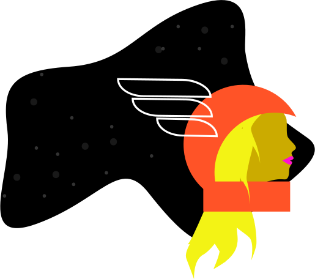

<section id="about" class="container">
      <div class="wrapper">
        <div class="grid-whole@xs grid-half@s grid-half@m grid-half@l grid-half@xl">
          
    </div> 

      <div class="grid-whole@xs grid-half@s grid-half@m grid-half@l grid-half@xl padding-thinn">
          <h1 class="t-eyebrow">About</h1>
          <p class="t-black t-serifweight t-thiccfont@xs t-thiccfont@s t-thiccfont@m t-thiccfont@l t-thiccfont@xl t-height-tight">Insatiably curious.</p>

              <p class="t-black">Tatiana Mac (she/they) is an independent American engineer. She is an open source maintainer who created and is building <a class="t-link-accent-orange" href="https://www.styledotcss.com">Self-Defined</a>, a modern dictionary about us; and <a class="t-link-accent-orange" href="https://github.com/tatianamac/devsofcolour/">Devs of Colour</a>, a database that will prioritise finding undiscovered Black/brown talent through a thoughtful search algorithm.</p>

              <p class="t-black">As a consultant, she works directly with organisations to build clear and coherent products and design systems.</p>

              <p class="t-black">An international keynote speaker, she speaks on the intersection of technology and ethics, examining how our products both fit and define our social and environmental settings. You can view her recorded talks on <a class="t-link-accent-orange" href="https://www.youtube.com/watch?v=Hzs_8e3Xhhc&list=PLPhd673abXl7PPmhS4FmuTgPmOyv_xvYy">YouTube</a>.</p>

              <p class="t-black">She believes the trifecta of accessibility, performance, and inclusion can work symbiotically to improve our social landscape digitally and physically. When ethically-minded, she thinks technologists can dismantle exclusionary systems in favour of community-focused, inclusive ones.</p>

              <p class="t-black">Never totally pleased with design tools, she designs in browser to bring performant, semantic, and accessible visual narratives into the web. Her current obsessions are optimising variable fonts, converting raster images into to SVGs, and recreating modernist paintings in CSS grid. When she can successfully :q vim, she finds new countries to explore (36 and counting).</p>

              <p class="t-typeweight t-black">Open to remote/international opportunities.</p> 

          </div>

      </div>
</section>